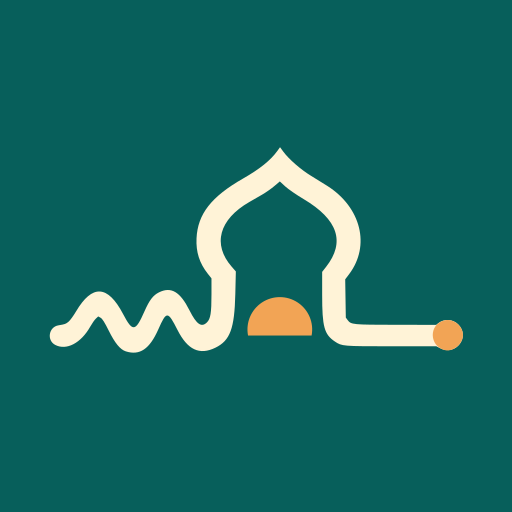
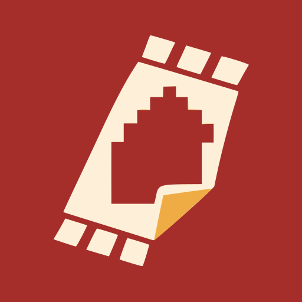
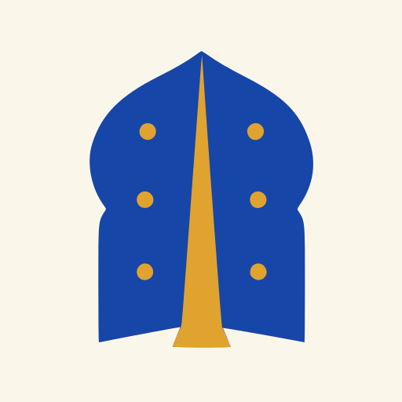
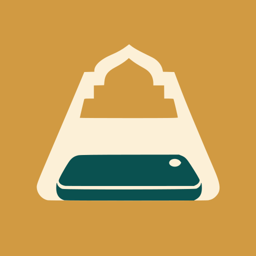

01Kairouan Shadow
A Kairouan minaret casts a long terracotta shadow. The tower gives the icon a place and its moving shadow suggests time.
For a prayer-times app that knows when to quiet the phone. Compare the original with Low Sun.
At 48 px the wave, arch and quiet ending are still distinct. The current launcher’s Qur’an and mute badge are harder to separate at that size. Its Kairouan minaret gives it a stronger Tunisian landmark.
 48px24px
48px24pxA small amber sun sits low inside the original two-wave arch. Its flat base lines up with the quiet stroke, and its color echoes the endpoint. The doorway feels lit, even at launcher size.

A Kairouan minaret casts a long terracotta shadow. The tower gives the icon a place and its moving shadow suggests time.

A turned corner shows the golden reverse of a prayer rug. Its stepped niche and broad fringe give the textile a recognizable outline.
Two sound waves rise into a prayer arch and settle into a level line. The phone going quiet for prayer is legible in a single gesture.
One broad-nib ص, the opening letter of صلاة, carries the whole icon. The open counter holds its shape at small sizes.
A wedge of sunlight enters a mosque courtyard. Three arcade openings and a small corner tower give the plan its scale.

Morning light falls through a half-open cobalt doorway. The paired leaves and brass studs recall Sidi Bou Said.
A crescent cuts into one page of an open Qur’an. The two broad leaves suggest night reading with very little detail.
Five leaves grow from one olive branch. The gold tip picks out the next prayer in the day.

A phone lies face down at the foot of a prayer mat. Its camera dot and the woven niche show the app’s quiet mode through a familiar action.
An ivory sighting rule picks out one of five stations on a brass quadrant. The instrument connects the sun’s movement with prayer time.